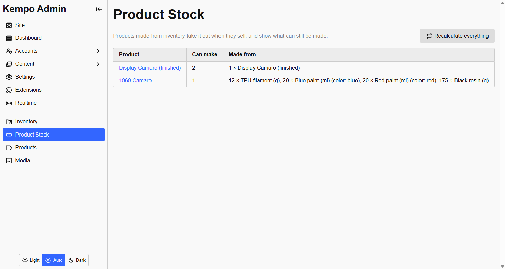

<page pageName="Selling" title="Selling - Kempo Products Inventory">
  <content>
    <h2 id="selling">Selling takes the materials</h2>
    <p>When a purchase is recorded in kempo-products, this extension takes every material the product uses out of inventory in <strong>one atomic call</strong>. Either all of them are taken or none are, so a sale never takes the resin and then finds the paint short.</p>
    <ul>
      <li>The amount is the per-unit amount times the quantity bought, for the materials that match the choices bought.</li>
      <li>Every inventory movement carries the order reference, written into its note, so you can find what an order took.</li>
      <li>kempo-products records a purchase once per reference, so recording the same one again does not take anything twice.</li>
    </ul>

    <h2 id="stock-follows" class="mt">Stock follows the materials</h2>
    <p>A linked product's stock is <strong>how many can be made from what is on hand</strong>: for each material, the quantity in inventory divided by the amount per unit, rounded down, and the smallest of those numbers wins. The scarcest material limits the product.</p>
    <div class="mb">
      
      <small class="d-b tc-muted">The Product Stock page lists every linked product and what limits it.</small>
    </div>
    <p>Choices are worked out the same way: a colour is <strong>marked sold out</strong> when there is not enough of the materials it needs for one more.</p>

    <h2 id="shared" class="mt">Products that share materials</h2>
    <p>Two products can use the same material, and both stay correct. With 300 g of PLA and two products that each need 200 g, each shows 1 in stock. Sell one and 100 g is left, so <strong>both</strong> go out of stock, because neither can be made any more.</p>

    <h2 id="restocking" class="mt">Restocking</h2>
    <p>Receiving resin in the inventory, or correcting a count, recalculates every product made from that item straight away. A product that was out of stock comes back, with no action in the products admin.</p>

    <h2 id="reversing" class="mt">Reversing a purchase</h2>
    <p>When a purchase is reversed (a refund or a cancelled order), exactly what it took is put back. The extension remembers the amounts it took for each purchase, so the reversal is correct <strong>even if the links were edited since</strong>. Reversing twice puts back once.</p>
  </content>
</page>
